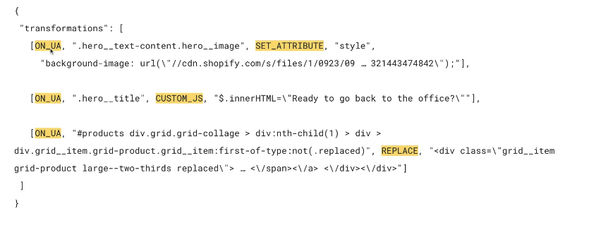
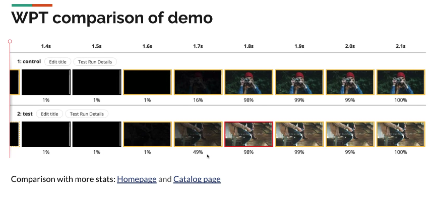

Participants
Mike Henniger, Micah Heineck, Philip Tellis, Noam Helfman, Noam Rosenthal, Pat Meenan, Alex N. Jose, Nic Jansma, Yoav Weiss, Barry Pollard, Amiya Gupra, Carine Bournez, Jase Williams, Jeb Barabanov, Sean Feng, Abhishek Ghosh, Katie Sylor-Miller, Abin Paul, Andy Davies, Annie Sullivan, Aoyuan Zuo, Cliff Crocker, Dan Shappir, Hao Liu, Boris Schapira
Admin
- Github issues, feedback requested, drafting charter in ~2 weeks
- Next meeting - March 16 at 7am PT (!!!)
Minutes
Recording
- Alex: second update about A/B testing in this forum, last one was a year ago
- .. presenting with Micah from Optimizely
- .. Client A/B testing refers to integrating modifications in the browser
- … The browser loads a script and the A/B testing config from the provider, and then modify the DOM based on it in a blocking fashion and/or hiding the document
- … This is much more scalable compared to server side, requires less engineering and enables marketing folks do the changes
- … Downside is suboptimal performance
- … Want to keep the good parts, without the negative impact
- … Last year presented a demo that uses CDN/edge-compute to integrate the A/B configuration.
- … the A/B transformation was represented using a standardized transformation operations
- … Used MutationObserver to apply the transformations
- … In the last year, we worked together to define 10 transform operations, interoperable between the browser and edge: applied either in the browser or at the edge
- … Also client-only operation: customJS, as edge may not allow arbitrary JS. May change in the future
- … Bringing HTTP header operations which are not available in client side A/B tests
- … Want to make the edge optional - move the “pre-UA” part of the transformation into the origin
- … <demo>
- Micah: used a test “retail” site for the demo, built on Shopify
- … Front the site with CF workers. One version returns the page as is, serves as “control”
- … Then “experiment” - changed the BG image, title and applied a change where new items are injected to the catalog page
- … This example shows what a real testing campaign from a marketing team may look like

-  height: 244.00px; margin-left: 0.00px; margin-top: 0.00px; transform: rotate(0.00rad) translateZ(0px); -webkit-transform: rotate(0.00rad) translateZ(0px);" title="">
-  height: 282.67px; margin-left: 0.00px; margin-top: 0.00px; transform: rotate(0.00rad) translateZ(0px); -webkit-transform: rotate(0.00rad) translateZ(0px);" title="">
- Lab tests:

- … Lots of things to improve still. Want to improve the prototyping and testing suite, add additional operations.
- … Want to be able to dynamically fetch more transformations, especially for SPAs, enables behavioral experimentation
- … exploring browser-native applicator, would reduce the payload, 103 Early Hints
- … Looking into other components of experimentation, e.g. metric collection
- Michal: For the onUA variant to apply the change, the timedelta seemed small. Did the transformation happen fast enough so the original image is not fetched?
- Alex: That seems to be happening already
- Hao: Imagine performance relative to the number of transformations, does this model scale with a large number of transformations?
- Alex: Have separate benchmarks that try out different operations. Important to remember that things that don’t need to go to the client can be applied at the edge or origin.
- … transformations can also be applied once, we could choose to drop them and free up computations. There’s cost, but it’s optimized for it
- … Incremental fetch would also help us apply a small number of transforms upfront and add more later on
- … Also depends on what selectors you write, but currently under 1ms
- Micah: initial thoughts around scalability, but for running real experiments, 1000 variations are the wrong approach
- Boris: Micah said that if you have a lot of A/B tests you may want to reconsider something else. But what about edge-side personalization?
- Micah: agree that experimentation platforms are used for personalization. Can create more experimentation variants, needs to be considered.
- https://github.com/WICG/ab-worker-prototype
- Alex: may rename the repo, please file issues there!
LOAF - Noam Rosenthal
Recording
- NoamR: working on Long Animation frames. You can go through the explainer
- … Born from frustration RE responsiveness issues that reflect in INP but are hard to debug
- … tried to use LongTasks for that and saw that they don’t give you enough information, nor do they measure all things that happen
- … In Chromium, “updating the rendering” is its own task, so a rAF with a long operation would be separate from the task that preceded rendering (e.g. fetch response callback)
- … So if both of them are almost-long, you can block rendering for over 50ms without it being counted, as you triggered two different almost-long tasks
- … In the spec, UI events are not specified as tasks, it’s just handwaved as an “event fired at some point”
- … So unclear how that works with tasks
- … Found that tasks are implementation specific, and their semantics change in implementations over time
- … Some LongTasks are not measured, e.g. Promise resolvers
- … Looked at what we should be measuring and came up with Long Animation Frames
- … Revamp of previous ideas
- … Measuring things that can block the time between a user interaction to when the UA is ready to paint
- … setTimeout + a rAF call after it would be a single long animation frame
- … On top of that we show a list of “long scripts” longer than 5 ms that were present in that long animation frame
- … Idea is to focus on the script entry points which are typically the highest for usage.
- … Another info is around layout thrashing and how much time is spent inside style and layout
- … Additional color could be: did it actually block an event
- … <demo showing LongAnimationFrames perf entries, with their script attribution>

- … Includes source location for LoAFs
- … Experimental feature landed in Canary, but without the script info just yet
- … Running with an implementation to try and get some data from the field so we can come to standardization with some data backing it up
- NoamH: 2 scenarios that could benefit from this on top of what you highlighted
- … Could be used as a lightweight animation smoothness measurement. Michal will not like it, but it will give you the option to measure some smoothness scenarios without a rAF loop
- … Could be used for information gathering for layout and style that’s not currently exposed in JS profiling
- Noam: it’s complementary to js profiling as this doesn’t have overhead, where JS profiler does. The latter also has a lot of information
- … This can help you to decide which part of your app to profile
- … For the first, right now it’s not really supposed to measure smoothness. Need to think about it
- Nic: Wanted to echo what Boris said, and this is absolutely what we’d want to provide our customers with. Seeing those scripts in the live demo are so exciting, even if just a prototype. Huge thumbs up!
- … Would that be feasible to apply to other timings?
- NoamR: The scripts are a bit parallel to LoAF. Use LoAF as a way to decide when to measure, as it’s just time correlated. I think we can apply it to other entry types.
- .. Trying to do that with zero overhead. That’s why we’re only doing top-level script - the entry point from a task to a script.
- Pat: As far as attribution data and privacy, is it using the same gates to privacy as the JS profiling? Is it not exposing more than js profiling?
- NoamR: It’s all same-origin. You’re getting all the script attribution for scripts that are in your origin. You get LoAF only for visible windows.
- … More concerned with overhead than with security
- … ETA for script support in Canary? Hope for an initial CL next week or the week after it
- … Promises are the most complicated part of this. Several callback don’t get information
- … Lots of details to cover which can take time
- Gil: Amazing! Biased towards INP and can see how this can help.
- … Mentioned limitations per script origin. Will we see loafs for 3P scripts?
- NoamR: You’d see the execution. For the same origin frames, you’d be able to see cross-origin scripts, as they are already visible.
- Gil: LoAF sounds like a real game changer when trying to measure INP caused by Script Eval Parse/compile Long Tasks (something that is not possible to measure right now without workarounds).
Chat transcript
Boris Schapira5:14 PM
Thanks Alex, very interesting.
Alex N. Jose5:17 PM
Control:
https://atticandbutton-ab-demo.alexnj.workers.dev/?experiment=alexnj/atticandbutton-ab-demo/main/experiments/control.json
Experiment:
https://atticandbutton-ab-demo.alexnj.workers.dev/?experiment=alexnj/atticandbutton-ab-demo/main/experiments/back2work-campaign.json
Nic Jansma5:28 PM
Deck: https://docs.google.com/presentation/d/1WX-E63jL7ZwGf_jNszhfkdxsvzlXLdJdPMSTxK3X0A0/edit?usp=sharing
Nic Jansma5:36 PM
https://github.com/WICG/ab-worker-prototype
https://github.com/w3c/longtasks/issues/103
Barry Pollard5:37 PM
I see Tim Kadlec on here. This seems very similar to how WPT experiments work - so I wonder if there's any learnings from them to take on board here? Maybe you should all chat?
Tim Kadlec5:38 PM
Lots of good work on the A/B stuff and I'd be more than happy to chat.tim@timkadlec.com
Noam Rosenthal5:38 PM
https://github.com/w3c/longtasks/blob/loaf-explainer/loaf-explainer.md
Alex N. Jose5:39 PM
Thanks Barry, Tim, will reach out to sync up!
Gilberto Cocchi5:45 PM
+1, I would like to so much to identify those Script Eval caused Long Tasks!
Amiya Gupta5:50 PM
very cool!
JeB Barabanov5:50 PM
This looks so much better than what we have today!
Gilberto Cocchi5:50 PM
This is amazing!!!!
Boris Schapira5:50 PM
The auditability capabilities this offers are really exciting.
Boris Schapira5:54 PM
It's so sad the demo was not recorded. I want to share it with colleagues!
Michal Mocny5:55 PM
Boris: easy, record your own :)
Open Chrome Canary with --enable-blink-featutres=LongAnimationFrameTiming
Boris Schapira5:56 PM
Thanks Michal!
Michal Mocny5:56 PM
then register perf observer for 'long-animation-frame'. (scripts support still incoming)
JeB Barabanov5:57 PM
Any ETA for scripts support in Canary?
JeB Barabanov6:01 PM
Amazing, can't wait for this, thanks Noam